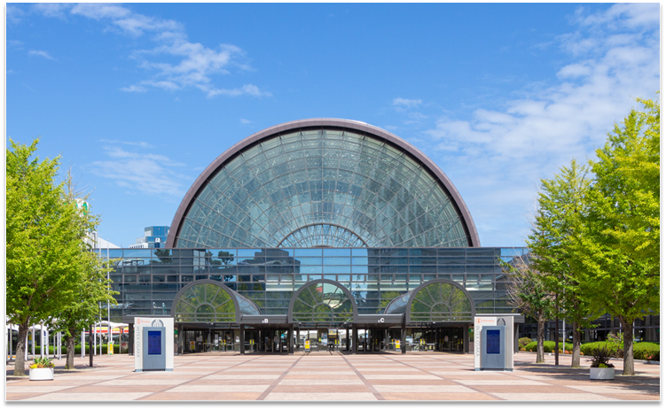
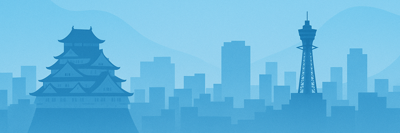

Nakafuto Station
Osaka Metro New Tram (Nanko Port Town Line). Approximately 5 minutes on foot — the closest station to the venue.
IEEE ISR/SIAS 2026 will be held at INTEX Osaka, Osaka, Japan, December 2–4, 2026.
INTEX Osaka is one of Japan's largest international exhibition and convention centres, located on Sakishima Island in Osaka Bay. It regularly hosts large international conferences and exhibitions.
Address: 1-5-102 Nanko-kita, Suminoe-ku, Osaka 559-0034, Japan
Website:
intex-osaka.com
The specific halls and meeting rooms used by IEEE ISR/SIAS 2026 will be confirmed with the conference program.

INTEX Osaka is served by three stations. Walking times below are from the venue operator; please confirm current timetables before travelling.
Osaka Metro New Tram (Nanko Port Town Line). Approximately 5 minutes on foot — the closest station to the venue.
Osaka Metro New Tram (Nanko Port Town Line). Approximately 8 minutes on foot.
Osaka Metro Chuo Line. Approximately 9 minutes on foot, or transfer to the New Tram.
Indicative journey times: approximately 40 minutes from Osaka (Umeda) or Namba, 45 minutes from Shin-Osaka, and 50 minutes from Kobe (Sannomiya). See the official access page for full routes, fares, and access by car, plane, or ferry.
The main international gateway to the Kansai region, connected to central Osaka by rail and limousine bus.
Handles domestic flights, connected to central Osaka by limousine bus and the Osaka Monorail.
Osaka is Japan's second-largest metropolitan area, known for its food culture, historic sites including Osaka Castle, and its role as a centre for manufacturing and robotics research.
December in Osaka is cool and generally dry. Visitors should bring warm clothing and check the forecast before travelling.

Participants who require a visa to enter Japan should apply well in advance. Information on invitation letters for visa applications will be published with registration details.